🌲 1. Tổng Quan Xứ Sở Sương Mù & Cao Nguyên Lâm Viên
Khác biệt hoàn toàn với khí hậu nhiệt đới gió mùa nóng ẩm của vùng đồng bằng phía Nam, Đà Lạt mang đặc trưng của vùng á nhiệt đới núi cao với bốn mùa luân chuyển kỳ ảo trong cùng một ngày: sương sớm mùa xuân thanh khiết, trưa nắng ấm mùa hạ chan hòa, chiều mây bảng lảng mùa thu lãng đãng và đêm đông se lạnh co mình bên tách cà phê ấm nóng. Đây không chỉ là nơi tránh nóng lý tưởng mà còn là cái nôi gìn giữ hàng ngàn biệt thự Pháp cổ kính, tạo nên một "Tiểu Paris" phương Đông đầy chất thơ.
🏛️ 2. Vị Trí Địa Lý & Dấu Ấn Lịch Sử Đô Thị Cao Nguyên
Về mặt địa giới hành chính, thành phố Đà Lạt là tỉnh lỵ và trung tâm kinh tế, chính trị, văn hóa của tỉnh Lâm Đồng. Đô thị nằm tựa lưng vào sườn phía Nam của dãy Trường Sơn hùng vĩ, tiếp giáp huyện Lạc Dương ở phía Bắc, huyện Đơn Dương ở phía Đông và huyện Lâm Hà, Đức Trọng ở phía Tây và Nam.
📜 Căn Cứ Pháp Lý & Văn Bản Quy Hoạch Nhà Nước
Theo Quyết định số 704/QĐ-TTg ngày 12/05/2014 của Thủ tướng Chính phủ, đồ án Điều chỉnh Quy hoạch chung thành phố Đà Lạt và vùng phụ cận đến năm 2030, tầm nhìn đến năm 2050 đã xác định Đà Lạt phát triển theo mô hình chuỗi các đô thị liên kết có tính đặc thù về "Thành phố trong rừng, rừng trong thành phố"; trung tâm du lịch sinh thái, nghỉ dưỡng cao cấp quốc gia và quốc tế; trung tâm di sản kiến trúc cảnh quan độc đáo.
Bên cạnh đó, Đà Lạt vinh dự được Thủ tướng Chính phủ ký Quyết định số 227/QĐ-TTg công nhận là "Thành phố Festival Hoa Việt Nam". Đặc biệt, vào ngày 31/10/2023, Tổng Giám đốc UNESCO đã chính thức ký quyết định công nhận Đà Lạt là thành viên Mạng lưới các thành phố sáng tạo toàn cầu của UNESCO (UCCN) trong lĩnh vực Âm nhạc, khẳng định tầm vóc văn hóa nghệ thuật của thành phố trên bản đồ thế giới.
Dấu ấn lịch sử khởi sinh đô thị: Lịch sử cận đại của Đà Lạt gắn liền với cột mốc lịch sử ngày 21 tháng 6 năm 1893, khi nhà thám hiểm, bác sĩ người Pháp gốc Thụy Sĩ Alexandre Yersin dẫn đầu đoàn thám hiểm vượt ngàn dặm hiểm trở đặt chân lên đỉnh cao nguyên Langbiang hoang sơ. Bị mê hoặc bởi cảnh sắc thiên nhiên kỳ vĩ và bầu không khí trong lành như vùng núi Alps châu Âu, ông đã gửi thư đề xuất Toàn quyền Paul Doumer chọn vùng đất này để kiến thiết thành một trạm điều dưỡng khí hậu quy mô bậc nhất Đông Dương.
Khởi nguyên danh xưng "Đà Lạt": Về mặt ngôn ngữ và nhân học, tên gọi "Đà Lạt" bắt nguồn từ tiếng của đồng bào bản địa người Lạch (Lạt) — một phân nhóm cư dân lâu đời thuộc cộng đồng dân tộc K'Ho. Trong tiếng bản địa, từ "Đạ" có nghĩa là nguồn nước, con sông, con suối; còn "Lạch" là tên gọi của bộ tộc. "Đạ Lạch" nguyên nghĩa là "con suối của người Lạch" — chính là dòng suối Cam Ly lịch sử uốn lượn qua các buôn làng cổ xưa, nơi nuôi dưỡng sự sống của người bản địa qua bao thế hệ trước khi đô thị hiện đại hình thành.
📜 3. Huyền Thoại & Truyền Tích Dân Gian Vùng Đất
Ẩn sâu dưới làn sương mờ ảo của rừng thông ngút ngàn là cả một kho tàng truyền thuyết dân gian đẫm chất thi ca và bi tráng của đồng bào Tây Nguyên, lý giải sự hình thành của những danh thắng biểu tượng hôm nay.
🏔️ Bản Trường Ca Bất Tử: Chàng K'Lang Và Nàng H'Biang (Nguồn Gốc Núi Langbiang)
Tương truyền thuở xa xưa, tại vùng cao nguyên hoang vu có hai bộ tộc lớn nhất là người Lạch và người Chil vốn có mối thù hằn truyền kiếp do những lời nguyền hủ tục cổ hủ. Chàng K'Lang — một dũng sĩ kiên cường, tài ba buôn Lạch trong một lần đi săn đã dũng cảm cứu sống nàng H'Biang — người con gái xinh đẹp tuyệt trần của tù trưởng buôn Chil khỏi bầy chó sói hung tợn. Trái tim hai người lập tức hòa cùng một nhịp đập, họ nguyện gắn bó trọn đời bên nhau.
Thế nhưng, lời nguyền cấm đoán hôn nhân giữa hai bộ tộc đã ngăn cản tình yêu son sắt của họ. Không chấp nhận buông tay, K'Lang và H'Biang cùng nhau trốn lên đỉnh núi cao sinh sống giữa thiên nhiên đại ngàn. Đến một ngày mùa đông giá rét, nàng H'Biang lâm trọng bệnh. K'Lang vượt đèo lội suối về buôn làng cầu xin thuốc cứu mạng vợ nhưng bị quân làng truy đuổi tàn nhẫn. Để che chắn mũi tên độc của buôn làng bắn về phía K'Lang, nàng H'Biang đã lấy thân mình đỡ tên và ngã xuống trong vòng tay người yêu. Quá đau đớn, K'Lang khóc than thấu tận trời xanh rồi quyên sinh theo nàng. Nước mắt của chàng tuôn trào thành dòng suối Đạ Nhim (suối nước mắt), còn thi thể của hai người hóa thành hai ngọn núi đôi sừng sững tựa vào nhau, được người đời mãi mãi ngợi ca là đỉnh núi Langbiang (ghép từ tên K'Lang và H'Biang).
🌊 Huyền Tích Thác Datanla — Dòng Suối Thần "Đạ Tam N'nha"
Trong tiếng K'Ho, thác Datanla có tên gốc là "Đạ Tam N'nha" (nghĩa là "dòng nước ẩn dưới vòm lá"). Chuyện xưa kể rằng, trong cuộc giao tranh ác liệt chống lại bầy dã thú và giặc cướp tràn vào xâm chiếm vùng cao nguyên, dũng sĩ bản địa K'Lang đã một mình cầm gươm báu xông pha trận mạc. Khi chém đổ hàng ngàn cây rừng cổ thụ, lưỡi gươm của chàng đã làm nứt toác các khối đá hoa cương, để lộ ra một dòng suối ngầm cuồn cuộn nước ngọt mát lành ẩn sâu dưới tán lá rậm rạp. Dòng nước thần kỳ ấy đã tiếp thêm sức mạnh cho hàng ngàn tráng sĩ buôn làng đánh tan giặc dữ, đem lại thái bình muôn đời cho vùng đất Lâm Viên.
🌸 4. Chuỗi Hình Ảnh 4 Mùa Du Lịch Đà Lạt
Mỗi mùa trôi qua trên cao nguyên Lâm Viên lại khoác lên phố núi một tấm áo diệu kỳ, biến Đà Lạt thành bức tranh thiên nhiên bốn mùa rung động lòng người. Dưới đây là bộ ảnh đặc tả vẻ đẹp độc bản của 4 mùa du lịch Đà Lạt:
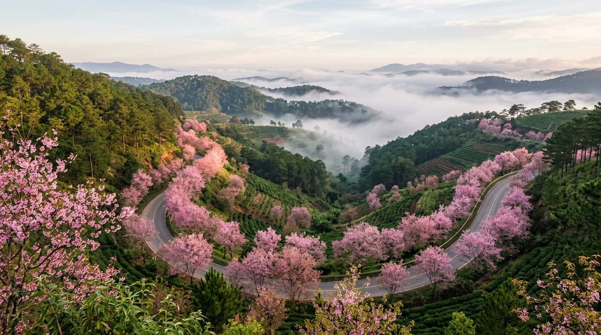
Mùa XuânSắc Hồng Mai Anh Đào Phố Núi
Khi tiết trời đầu năm còn se lạnh bảng lảng, hàng vạn gốc Mai Anh Đào cổ thụ ven Hồ Xuân Hương, dốc Đa Quý và đường Trần Hưng Đạo đồng loạt trút lá bung nở sắc hồng phấn diễm lệ, nhuộm hồng cả sườn đồi thông trong ánh nắng ban mai tinh khôi.
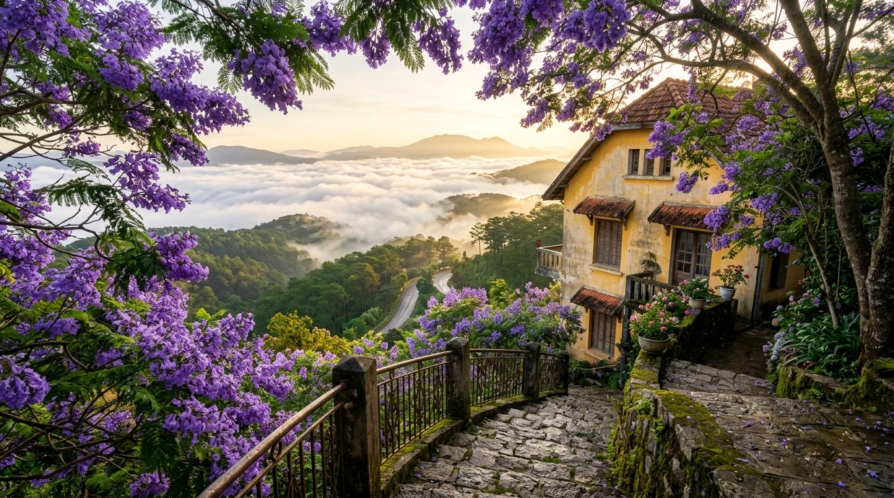
Mùa HạPhượng Tím Lãng Mạn & Mùa Săn Mây
Những chùm hoa Phượng Tím (Jacaranda) nở rộ dọc những con dốc đá quanh co và biệt thự cổ kính thời Pháp. Đây cũng là thời điểm vàng để thức giấc lúc 5 giờ sáng đón biển mây bồng bềnh cuộn sóng qua thung lũng đồi chè Cầu Đất.
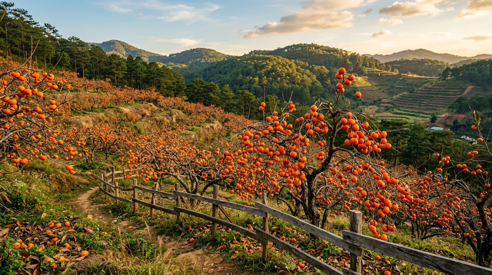
Mùa ThuMùa Hồng Chín Vàng & Mưa Bay Lãng Đãng
Đà Lạt bước vào mùa thu với những cơn mưa rào bất chợt làm sạch trong bầu không khí. Khắp các triền đồi ngoại ô Khe Sanh, Mimosa, những cành hồng trút hết lá xanh chỉ còn trơ lại hàng ngàn quả hồng trứng, hồng giòn chín cam đỏ rực rỡ dưới nắng hanh vàng.
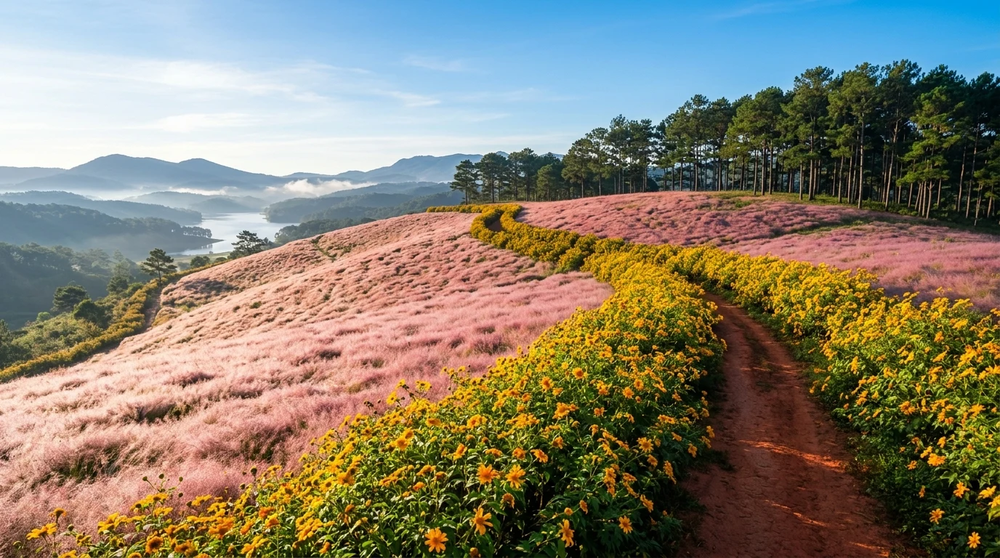
Mùa ĐôngHoa Dã Quỳ Vàng & Đồi Cỏ Hồng Tuyết
Thời điểm Đà Lạt lạnh nhất và cũng quyến rũ nhất: hoa dã quỳ dại vàng rực nở tràn khắp mọi nẻo đèo uốn lượn, trong khi thung lũng Đan Kia - Suối Vàng trải rộng tấm thảm cỏ hồng tuyết ngậm sương lung linh dưới ánh bình minh rạng rỡ.
📍 5. Top 10 Thắng Cảnh Biểu Tượng & Dấu Tích Lịch Sử
Khám phá trọn vẹn những tọa độ danh lam thắng cảnh và di tích kiến trúc quốc gia đã định hình nên linh hồn của Đà Lạt:
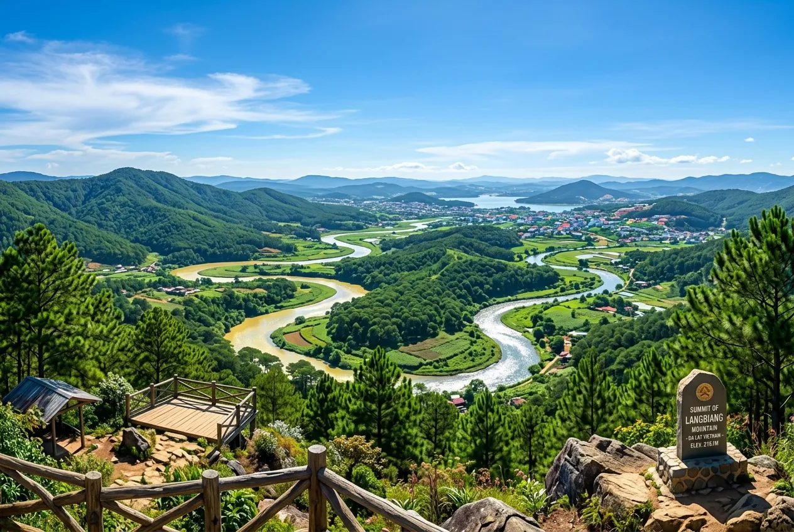
1. Đỉnh Núi Thiêng Langbiang
Sừng sững ở độ cao 2.167m, đỉnh Langbiang là biểu tượng kiêu hãnh của tình yêu son sắt giữa chàng K'Lang và nàng H'Biang. Ngồi trên xe jeep chuyên dụng vượt dốc thông vi vút lên đỉnh Ra-đa (1.929m), thu trọn vào tầm mắt toàn cảnh hồ Đan Kia lấp lánh và phố núi mờ ảo trong biển mây.
2. Thắng Cảnh Hồ Xuân Hương
Hồ nước nhân tạo hình trăng lưỡi liềm uốn quanh trung tâm thành phố, được xếp hạng Di tích danh thắng quốc gia năm 1988. Đi dạo bộ quanh hồ sáng sớm hoặc đạp vịt hoàng hôn là trải nghiệm lãng mạn không thể bỏ lỡ.
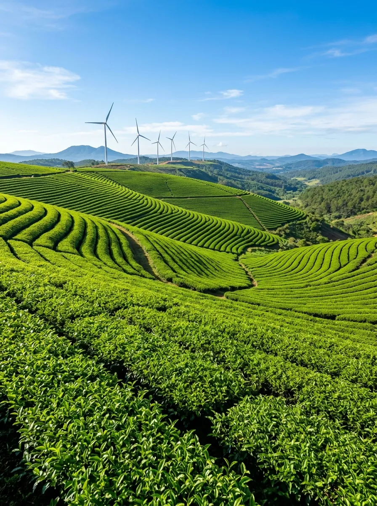
3. Đồi Chè Cầu Đất Farm
Thành lập từ năm 1927, đây là vùng đồi chè cổ thụ rộng gần 230 ha trên độ cao 1.650m. Điểm hẹn săn mây ngoạn mục bên những cánh quạt gió khổng lồ quay chậm giữa biển sương trắng xóa.
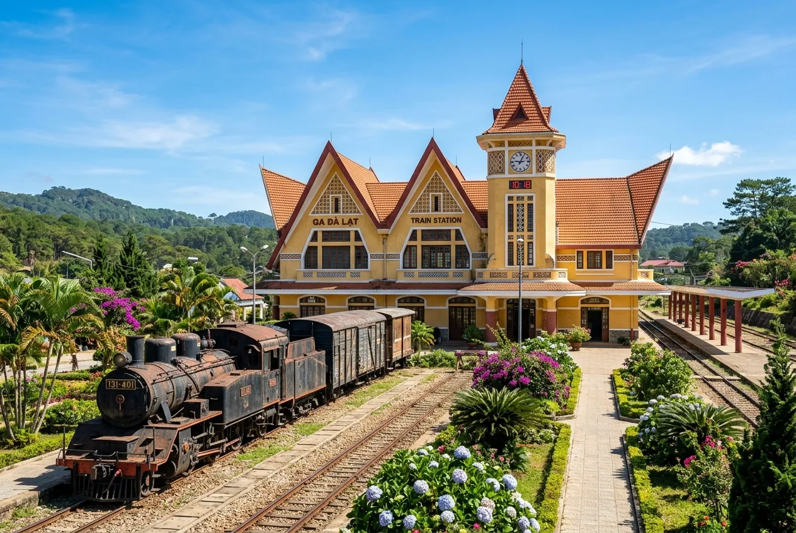
4. Ga Xe Lửa Cổ Đà Lạt
Nhà ga xe lửa đẹp và cổ kính nhất Đông Dương, khánh thành năm 1938 với hình tượng ba chóp mái cách điệu theo ba đỉnh Langbiang hùng vĩ. Nơi đây từng vận hành tuyến đường sắt răng cưa Tháp Chàm độc nhất thế giới vượt đèo Ngoạn Mục.
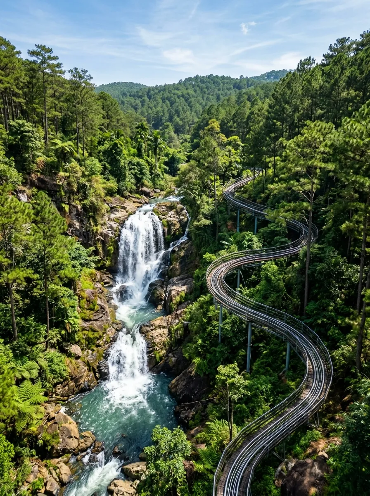
5. Quần Thể Thác Datanla
Dòng thác 7 tầng nước đổ trắng xóa lọt thỏm giữa hẻm sâu rừng nguyên sinh đèo Prenn. Trải nghiệm cảm giác phấn khích tột đỉnh với hệ thống máng trượt uốn lượn xuyên rừng thông dài tới 2.400m.
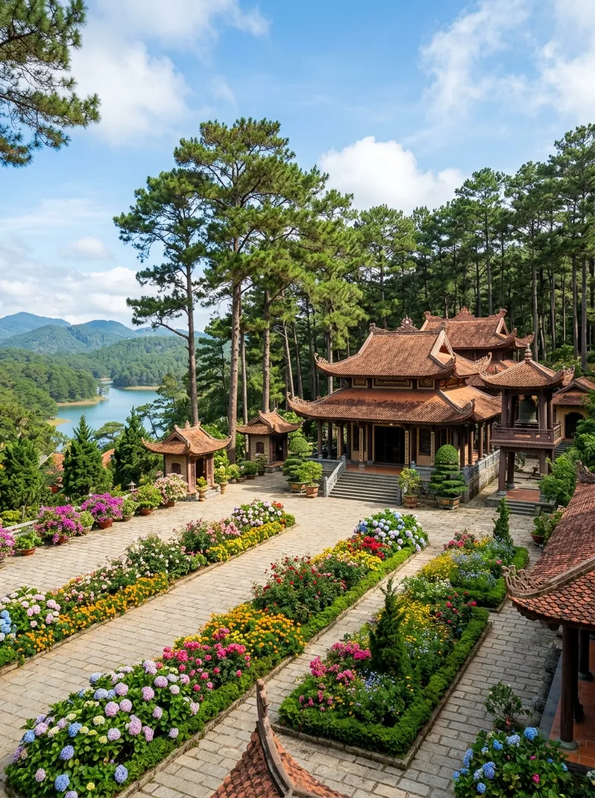
6. Thiền Viện Trúc Lâm
Ngôi đại tòng lâm thiền viện lớn nhất miền Nam thuộc dòng Thiền Trúc Lâm Yên Tử. Cụm kiến trúc thuần Việt bằng gỗ quý hài hòa tuyệt đối với rừng thông cổ thụ và vườn hoa quý ngát hương.
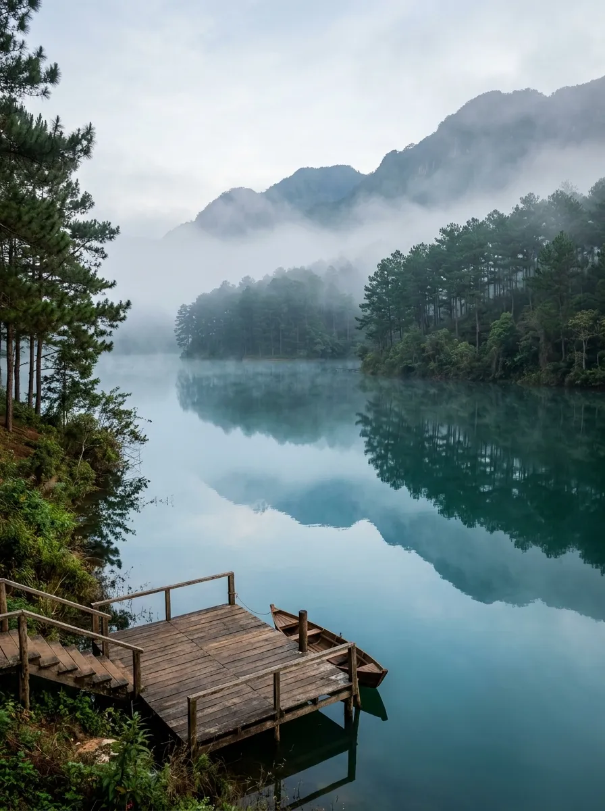
7. Hồ Tuyền Lâm Mộng Mơ
Được công nhận là Khu du lịch quốc gia đầu tiên của Việt Nam theo Quyết định 204/QĐ-TTg, hồ rộng hơn 350 ha với nhiều ốc đảo xanh ngắt nhấp nhô. Nơi lý tưởng để chèo thuyền kayak, cắm trại dã ngoại và ngắm rừng phong đổi màu lá.
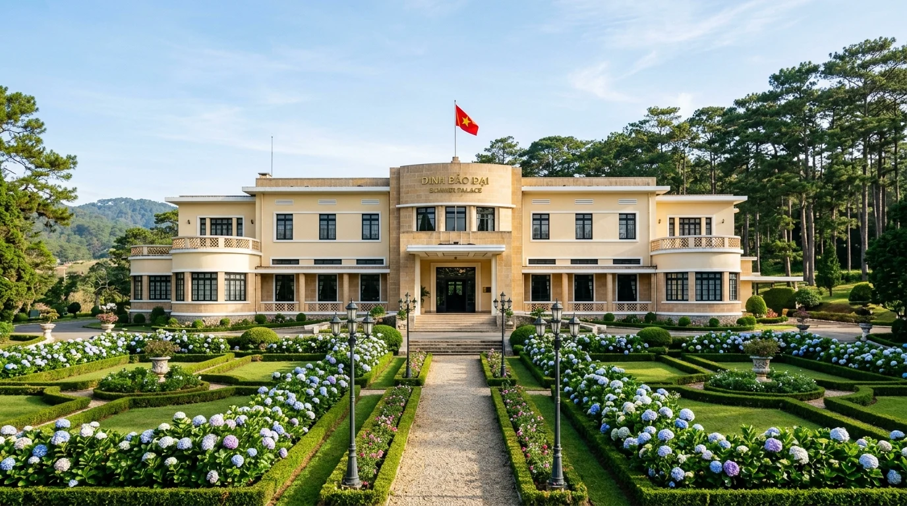
8. Dinh III Bảo Đại
Biệt điện mùa hè của vua Bảo Đại và Hoàng hậu Nam Phương, xây dựng từ năm 1933 trên đồi thông râm mát. Nơi bảo tồn nguyên vẹn 25 phòng nghỉ sang trọng, phòng thiết triều và hiện vật hoàng gia quý giá.
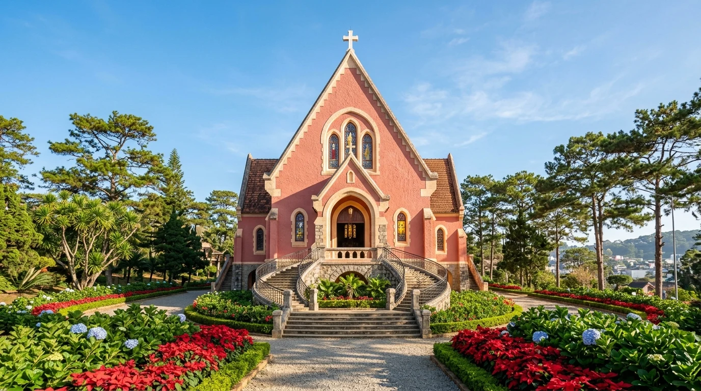
9. Nhà Thờ Domaine De Marie
Tọa lạc trên đồi Mai Anh, ngôi giáo đường nổi bật với màu sơn hồng đất nung ấm áp, hệ mái dốc lấy cảm hứng từ nhà rông Tây Nguyên và không gian ngập tràn hoa trạng nguyên, cẩm tú cầu.
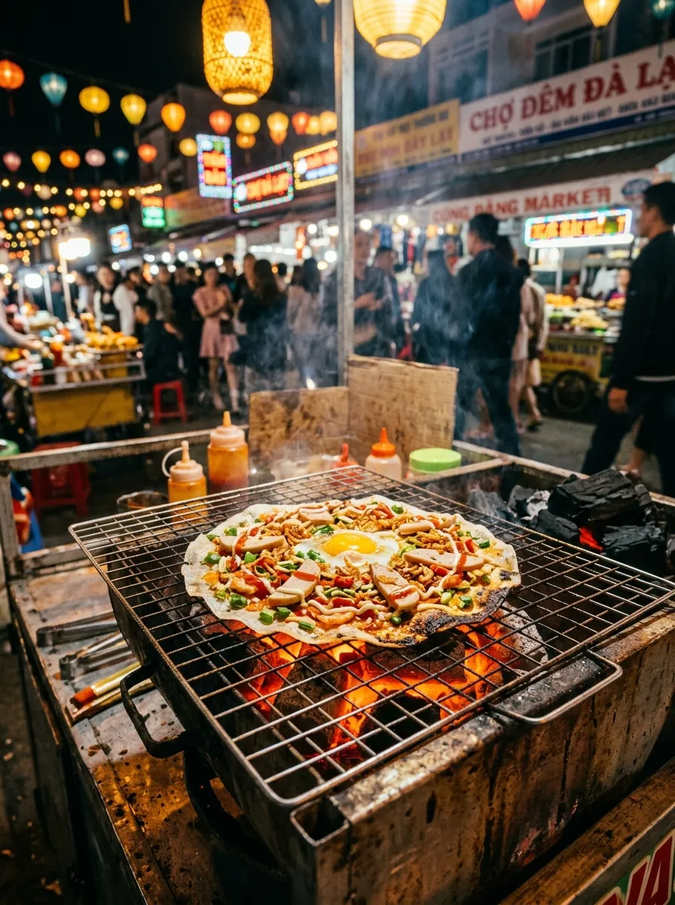
10. Chợ Đêm Đà Lạt & Bậc Thang Cổ
Khi hoàng hôn buông xuống, khu vực chân chợ Đà Lạt bừng sáng với hàng trăm gian hàng ẩm thực nóng hổi bốc khói nghi ngút. Thưởng thức khoai lang nướng, bánh tráng nướng và nhâm nhi ly sữa đậu nành nóng giữa cái lạnh 15°C.
🚗 6. Cẩm Nang Di Chuyển & Cung Đường Đèo Cao Nguyên
Nằm trên độ cao 1.500m, hệ thống giao thông đến Đà Lạt ngày càng hoàn thiện, kết nối thông suốt với cả nước qua đường hàng không và các tuyến đường bộ huyết mạch:
✈️ Đường hàng không (Sân bay Liên Khương — DLI)
Sân bay Liên Khương nằm tại thị trấn Liên Nghĩa, huyện Đức Trọng, cách trung tâm Đà Lạt 30 km theo hướng Nam. Các hãng hàng không Vietnam Airlines, Vietjet Air, Bamboo Airways khai thác chuyến bay thẳng hàng ngày:
- Từ Hà Nội (HAN) → Đà Lạt (DLI): Thời gian bay chỉ ~1 giờ 50 phút (khoảng cách hàng không ~1.450 km). Giá vé từ 1.200.000 – 2.500.000 VNĐ/chiều.
- Từ TP. Hồ Chí Minh (SGN) → Đà Lạt (DLI): Thời gian bay chỉ ~50 phút. Giá vé từ 650.000 – 1.400.000 VNĐ/chiều.
- Từ Đà Nẵng / Hải Phòng / Vinh: Các chuyến bay định kỳ 1h20p – 1h45p.
Từ sân bay Liên Khương về trung tâm thành phố: Đi xe bus sân bay đón ngay sảnh (40.000 – 50.000 VNĐ/lượt) hoặc taxi trọn gói (200.000 – 250.000 VNĐ/xe 4 chỗ, chạy cao tốc Liên Khương - Prenn chỉ mất 35 phút).
🚌 Xe khách giường nằm Limousine từ TP. Hồ Chí Minh
Khoảng cách đường bộ từ TP.HCM đến Đà Lạt là khoảng 305 km. Các nhà xe uy tín chạy liên tục 24/24 với tần suất 15 - 30 phút/chuyến (Phương Trang, Thành Bưởi, Phong Phú Limousine, Trọng Minh Limousine):
- Xe Limousine phòng nằm đơn / đôi: Giá vé 320.000 – 420.000 VNĐ/vé/người.
- Thời gian di chuyển: Khoảng 6 – 7 tiếng qua Cao tốc TP.HCM - Long Thành - Dầu Giây, QL20 và Đèo Prenn. Xuất phát lúc 22h – 23h đêm sẽ đến Đà Lạt vào 5h – 6h sáng hôm sau để kịp đón bình minh và săn mây.
🛣️ Cung Đường Đèo Mới Khang Trang: Đèo Prenn 4 Làn Xe
Dự án nâng cấp, mở rộng Đèo Prenn (dài 7,4 km) với tổng mức đầu tư hơn 550 tỷ đồng đã chính thức hoàn thành thông xe toàn tuyến 4 làn xe hiện đại vào đầu năm 2024. Cung đèo cửa ngõ huyết mạch này nay rộng thênh thang, mặt đường thảm nhựa êm ái, lắp đặt hệ thống chiếu sáng ban đêm thông minh và các vịnh ngắm cảnh an toàn tuyệt đối, rút ngắn đáng kể thời gian vượt đèo vào trung tâm thành phố.
🍲 7. Tinh Hoa Ẩm Thực Phố Núi Đà Lạt
Khí hậu se lạnh quanh năm đã tạo nên nét văn hóa ẩm thực độc đáo: những món ăn nghi ngút khói nồng nàn thảo mộc và vị ấm nóng làm say lòng mọi du khách:
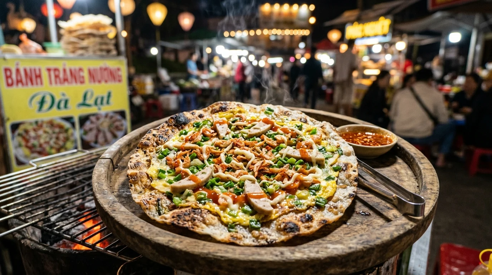
Đặc sản đêm lạnhBánh Tráng Nướng Đà Lạt
Mệnh danh là "Pizza Việt Nam", miếng bánh tráng mỏng nướng trên than hồng đỏ rực, quét mỡ hành thơm nức, đập trứng gà/trứng cút vàng ươm, rắc tép khô, bò khô, xúc xích và phô mai béo ngậy. Cắn một miếng giòn rụm, vừa xuýt xoa vừa cảm nhận hơi ấm lan tỏa giữa đêm đông.
📍 Địa chỉ: Bánh tráng nướng Dì Đinh (26 Hoàng Diệu), Bánh tráng nướng Nhà Chung, Chợ đêm Đà Lạt.
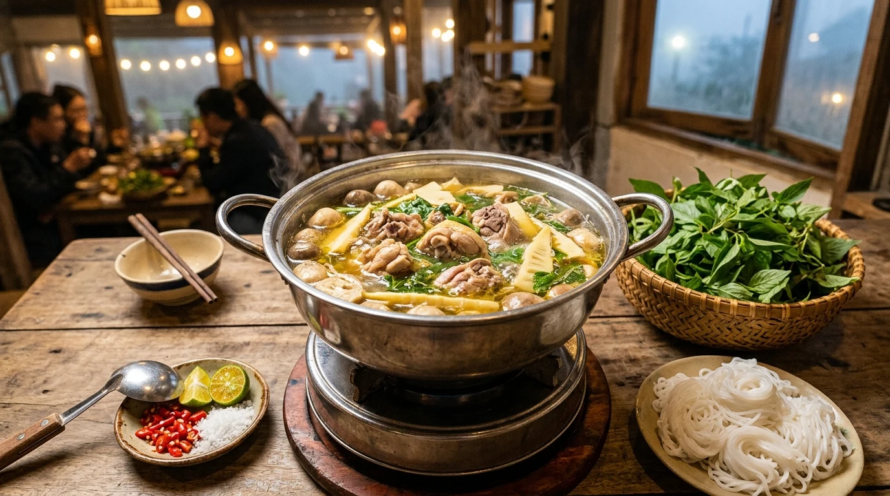
Món ăn quốc dânLẩu Gà Lá É Tao Ngộ
Nồi lẩu sôi sùng sục với thịt gà đồi săn chắc, ngọt thịt, nấm sò giòn ngọt và măng tre tươi. Điểm nhấn làm nên linh hồn món ăn là rổ lá é tươi non nhúng vừa chín tới, tỏa ra vị cay nhẹ the the thơm nồng ấm bụng, chấm muối ớt hiểm cay xé lưỡi.
📍 Địa chỉ: Lẩu gà lá é Tao Ngộ gốc (Số 5 đường 3/4), Lẩu gà lá é 668 (Chu Văn An).
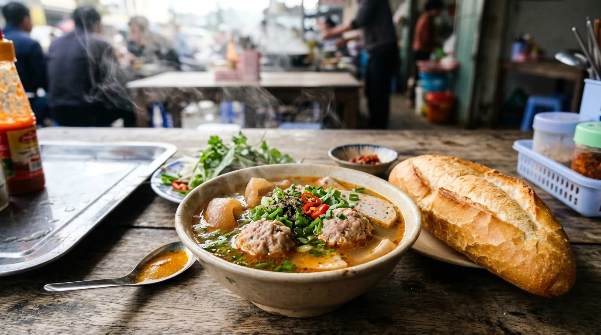
Điểm tâm sángBánh Mì Xíu Mại Hoàng Diệu
Món ăn sáng quen thuộc gắn bó với bao thế hệ người Đà Lạt: chén nước dùng trong vắt ninh từ xương heo ngọt lịm, bên trong là hai viên xíu mại thịt nạc băm mềm thơm, miếng da heo sần sật béo ngậy, lát chả lụa và sa tế cay nồng, xé bánh mì nóng giòn chấm ngập nước súp.
📍 Địa chỉ: Bánh mì xíu mại Hoàng Diệu (Số 26 Hoàng Diệu), Bánh mì xíu mại Thu Còi (Nguyễn Thị Minh Khai).
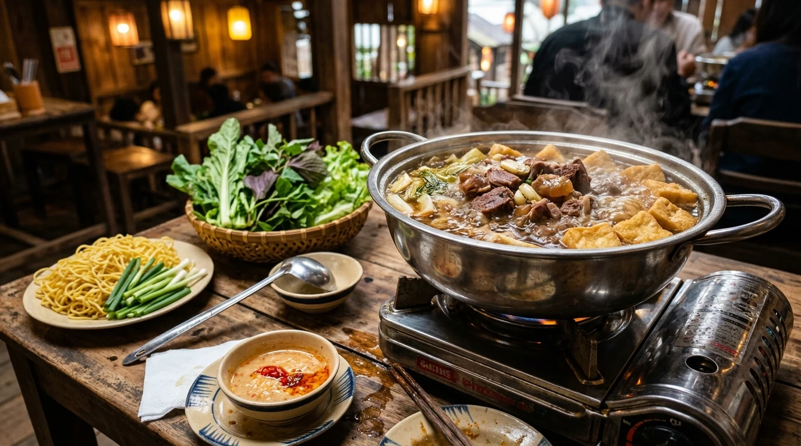
Đặc sản trứ danhLẩu Bò Ba Toa (Quán Gỗ)
Ra đời từ khu lò mổ Abattoir thời Pháp bên bờ suối Cam Ly, lẩu bò Ba Toa nổi tiếng với miếng thịt bò cắt dày cộp, ngập tràn nạm, gầu, gân, đuôi bò hầm mềm rục trong nước dùng thơm lừng quế hồi, ăn kèm mì trứng vàng ươm, cải xanh và chấm chao ớt sa tế đậm đà.
📍 Địa chỉ: Lẩu bò Ba Toa Quán Gỗ gốc (1/29 Hoàng Diệu), Lẩu bò Thanh Tâm (Nguyễn Thị Định).
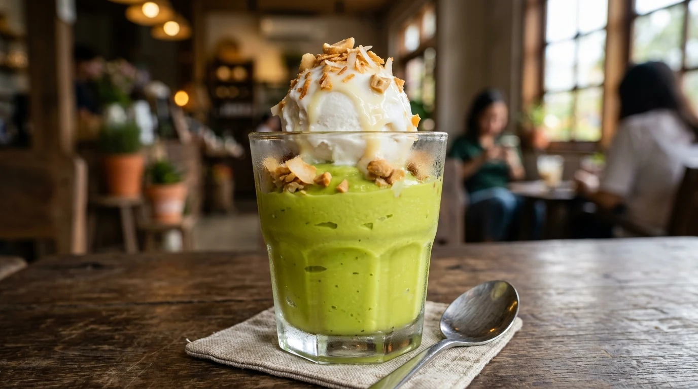
Món ngọt giải khátKem Bơ Thanh Thảo
Bơ sáp béo đặc sản Lâm Đồng được tuyển chọn kỹ càng, xay nhuyễn sánh mịn không xơ với sữa đặc béo ngậy, phía trên đặt một viên kem dừa trắng mịn màng mát lạnh, rắc thêm dừa sợi tươi và đậu phộng rang giòn thơm lừng.
📍 Địa chỉ: Kem bơ Thanh Thảo (76 Nguyễn Văn Trỗi), Kem bơ Phụng (97 Phan Đình Phùng).
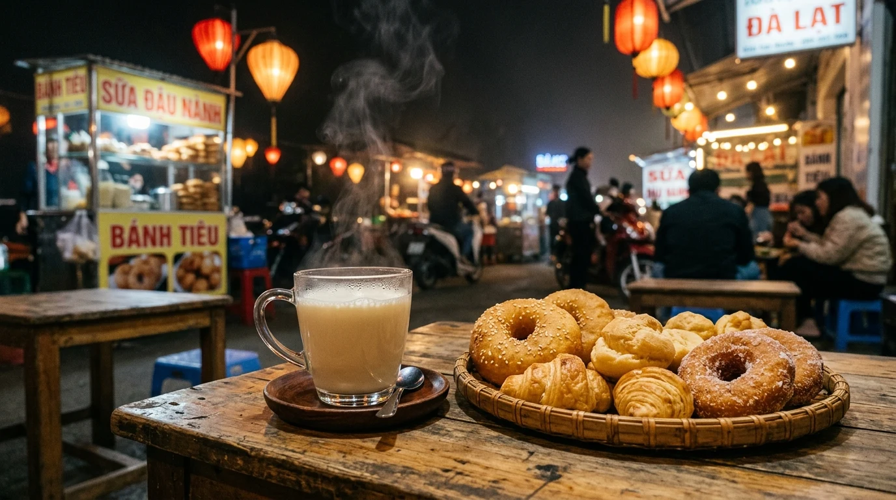
Văn hóa phố đêmSữa Đậu Nành Nóng & Bánh Ngọt
Không còn gì thi vị bằng việc ngồi bên chiếc bàn gỗ nhỏ ven đường trong gió lạnh 14°C, áp hai bàn tay vào ly sữa đậu nành hoặc "nành bò" (sữa đậu nành pha sữa bò đặc) nóng hổi, nhâm nhi chiếc bánh tiêu vừng giòn hay bánh su kem mềm ngọt.
📍 Địa chỉ: Quán Hoa Sữa (64 Tăng Bạt Hổ), Sữa Cô Lan (Hẻm Nhà Chung), Chợ đêm Đà Lạt.
🎟️ 8. Bảng Giá Vé Tham Quan & Dịch Vụ Niêm Yết (2026)
Bảng tổng hợp biểu phí tham quan các danh lam thắng cảnh và di tích lịch sử tại Đà Lạt được niêm yết chính thức:
| Điểm tham quan / Dịch vụ | Địa điểm / Khu vực | Giá vé niêm yết | Ghi chú & Dịch vụ đi kèm |
|---|---|---|---|
| Khu du lịch Núi Langbiang | Huyện Lạc Dương | 50.000 VNĐ | Vé vào cổng người lớn; Vé xe jeep lên đỉnh Ra-đa: 120.000 VNĐ / khách khứ hồi |
| Khu du lịch Thác Datanla | Đèo Prenn, Phường 3 | 50.000 VNĐ | Vé vào cổng; Vé Máng trượt Alpine Coaster khứ hồi: 250.000 VNĐ / người lớn |
| Ga xe lửa Cổ Đà Lạt | Đường Quang Trung, Phường 9 | 50.000 VNĐ | Vé tham quan chụp ảnh di tích; Vé tàu hỏa cổ đi Trại Mát: 100.000 – 150.000 VNĐ / khứ hồi |
| Dinh III Bảo Đại | Đường Triệu Việt Vương, Phường 4 | 40.000 VNĐ | Vé tham quan nội thất biệt điện; Thuê trang phục hoàng gia chụp ảnh: 30.000 – 50.000 VNĐ |
| Cáp treo Đồi Robin — Trúc Lâm | Đồi Robin, Phường 3 | 120.000 VNĐ | Vé cáp treo khứ hồi ngắm rừng thông; Vé một chiều: 100.000 VNĐ |
| Đồi Chè Cầu Đất Farm | Xã Xuân Trường | Miễn phí 100% | Vào đồi chè tự do; Cầu gỗ săn mây / Tour tham quan nhà máy chè cổ: 50.000 – 100.000 VNĐ |
| Thắng cảnh Hồ Xuân Hương | Trung tâm thành phố | Miễn phí 100% | Tự do dạo mát quanh hồ; Thuê thuyền đạp vịt: 60.000 – 100.000 VNĐ / giờ |
| Thiền Viện Trúc Lâm Đà Lạt | Núi Phụng Hoàng | Miễn phí 100% | Chốn tôn nghiêm chiêm bái tự do; Thuê thuyền du ngoạn Hồ Tuyền Lâm: 300.000 – 500.000 VNĐ / thuyền |
| Nhà thờ Domaine de Marie & Con Gà | Nội ô Đà Lạt | Miễn phí 100% | Mở cửa đón khách tham quan và dự thánh lễ tự do |
| Chợ đêm Đà Lạt & Quảng trường Lâm Viên | Trung tâm thành phố | Miễn phí 100% | Khu sinh hoạt công cộng mở cửa tự do 24/24 |
⚠️ Lưu ý: Bảng giá vé có thể được điều chỉnh vào các dịp lễ Tết Nguyên Đán hoặc Festival Hoa theo quyết định của ban quản lý các khu du lịch.
🧭 9. Gợi Ý Lịch Trình Khám Phá Đà Lạt (3 Ngày 2 Đêm) & Mẹo An Toàn
📅 Lịch trình 3 Ngày 2 Đêm (Trọn vẹn Thắng cảnh, Di sản & Săn Mây)
Ngày 1: Check-in Ga xe lửa → Dinh III Bảo Đại → Nhà thờ Domaine → Hồ Xuân Hương: Sáng đến Đà Lạt nhận phòng khách sạn, thưởng thức bánh mì xíu mại nóng giòn. 9h00 ghé Ga xe lửa Đà Lạt chụp ảnh bên những toa tàu cổ. Trưa ăn lẩu bò Ba Toa Quán Gỗ. Chiều viếng Dinh III Bảo Đại tìm hiểu lịch sử hoàng triều, ghé Nhà thờ Domaine de Marie tường hồng thơ mộng. 17h00 đạp vịt đón hoàng hôn trên Hồ Xuân Hương. Tối khám phá Chợ đêm Đà Lạt, ăn bánh tráng nướng và uống sữa đậu nành nóng.
Ngày 2: Săn mây Đồi chè Cầu Đất → Vườn hồng trĩu quả → Thác Datanla → Thiền viện Trúc Lâm: 4h30 sáng dậy sớm di chuyển về Cầu Đất đón biển mây cuồn cuộn và ngắm bình minh trên đồi chè. Trên đường về ghé thăm vườn hồng trĩu quả. Trưa thưởng thức lẩu gà lá é Tao Ngộ cay the ấm bụng. Chiều trải nghiệm máng trượt New Alpine Coaster tại Thác Datanla, sau đó đi cáp treo hoặc xe sang Thiền viện Trúc Lâm vãn cảnh hồ Tuyền Lâm thanh tịnh. Tối ghé quán cafe acoustic ngắm toàn cảnh thung lũng đèn lồng lung linh.
Ngày 3: Chinh phục đỉnh Langbiang → Vườn dâu tây công nghệ cao → Mua quà đặc sản: Sáng thuê xe jeep vượt đèo lên đỉnh Ra-đa Langbiang ngắm toàn cảnh hồ Đan Kia và suối Vàng mờ sương. 11h00 ghé các vườn dâu tây sinh học trải nghiệm tự tay hái dâu tươi tại vườn. Trưa ăn kem bơ Thanh Thảo. Chiều dạo chợ Đà Lạt mua atiso, mứt hoa quả, hồng treo gió làm quà trước khi ra sân bay Liên Khương hoặc lên xe về lại TP.HCM.
🛡️ Mẹo Trải Nghiệm Bản Địa & Cảnh Báo An Toàn
1. Giữ ấm cơ thể: Nhiệt độ Đà Lạt ban đêm và sáng sớm thường giảm sâu xuống 12 – 15°C, có gió rét buốt. Luôn chuẩn bị áo khoác dày, khăn len, găng tay khi đi dạo phố đêm hoặc dậy sớm săn mây.
2. An toàn giao thông đèo dốc & sương mù: Địa hình Đà Lạt quanh co nhiều dốc cao và cua tay áo gắt (dốc Nhà Bò, dốc số 7...). Luôn kiểm tra phanh xe máy trước khi thuê, đi chậm số thấp (số 1, 2 đối với xe số) khi xuống dốc, tuyệt đối không rà phanh liên tục và bật đèn sương mù khi tầm nhìn giảm.
3. Tránh bẫy "cò mồi" dâu tây & mứt giá rẻ: Tuyệt đối không đi theo những người chạy xe máy phát tờ rơi mời chào "vào vườn dâu hái tận gốc giá 20.000đ/kg" ven đường đèo. Nên mua đặc sản mứt, atiso, hồng sấy tại các cửa hàng uy tín có niêm yết giá rõ ràng (L'angfarm, quầy đặc sản chính thống bên trong Chợ Đà Lạt).